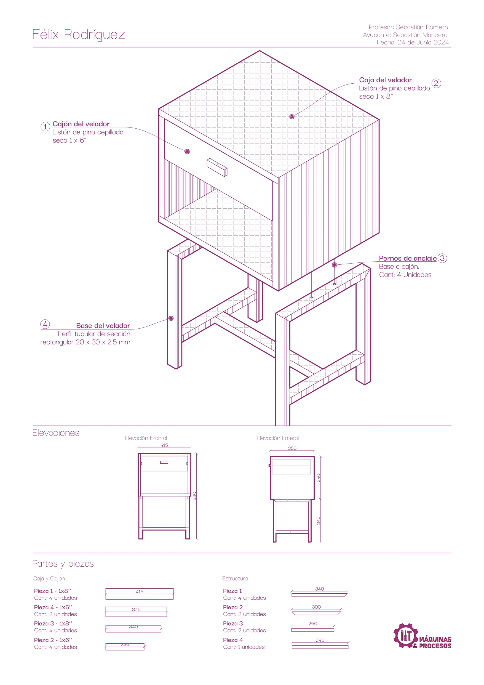
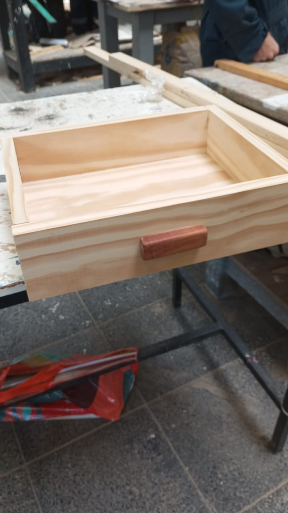
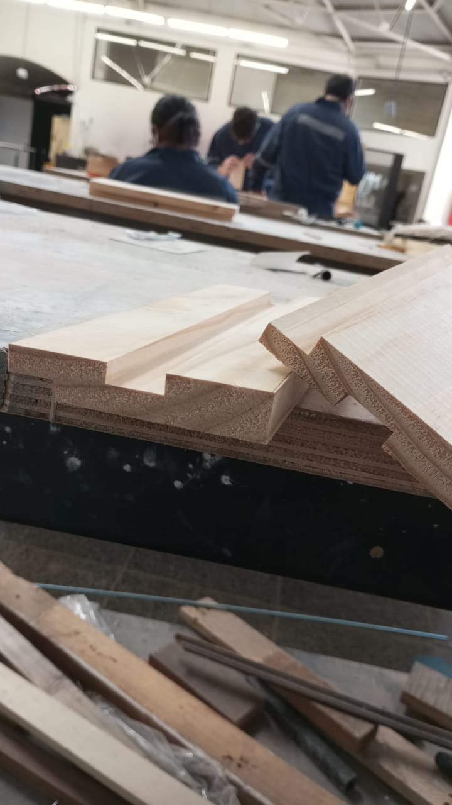
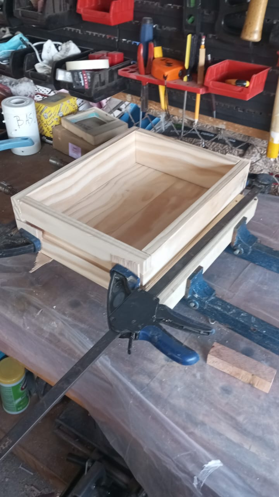

Velador
Velador con cajón, fabricado en listones de pino cepillado sobre una base de perfil tubular metálico de 20 x 30 x 2.5 mm. El cajón corre sobre la caja de madera y deja un compartimento abierto en la parte inferior. Diseñado y dimensionado desde cero, incluyendo elevaciones técnicas y despiece de piezas.



